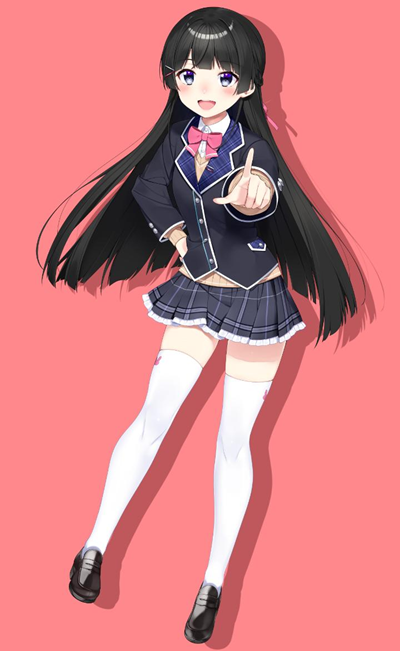

2018年に1期生としてデビューし、にじさんじのみならずVTuber全体を牽引してきたライバーの一人。 「委員長」の愛称で親しまれている。 真面目で清楚な見た目とは裏腹に、独特なワードセンスや豊富なサブカル知識、 ゲーム実況での冴えたツッコミや自由奔放なトークが魅力。 にじさんじ内外を問わず、彼女を見てVTuberを目指したというVTuberも数多くいる。 雑談、企画、歌枠、ゲーム実況など幅広い内容で生配信や動画の投稿をしている。
2020年10月に1stシングル「それゆけ！学級委員長」をリリースし、その後もソロアルバムの発売やワンマンライブの開催など音楽活動も盛んに行っている。